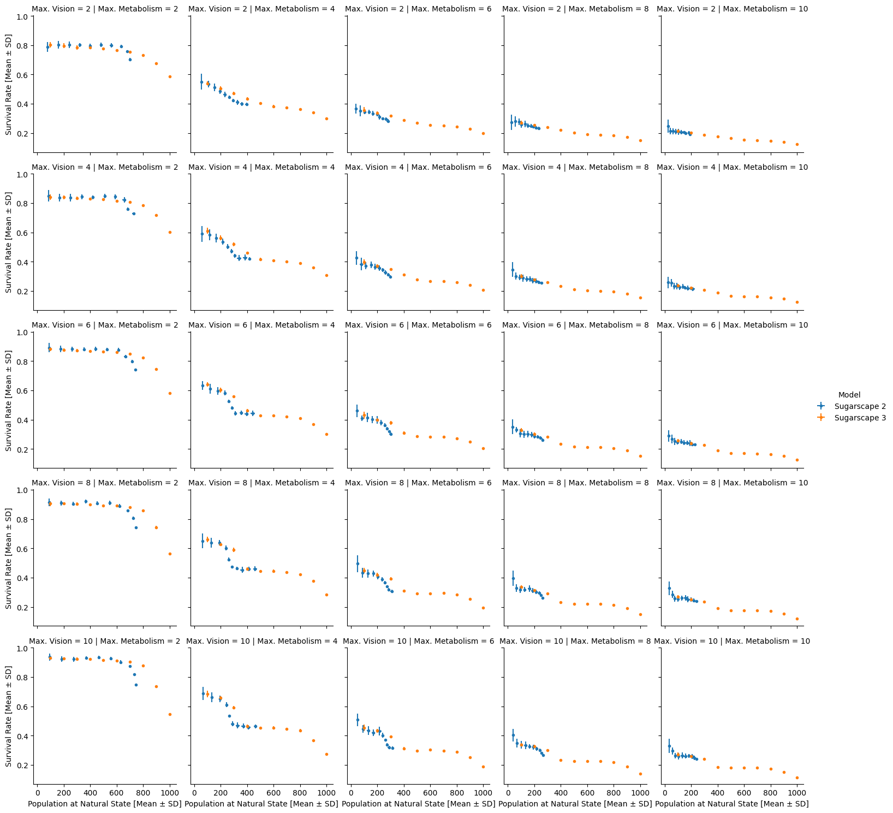
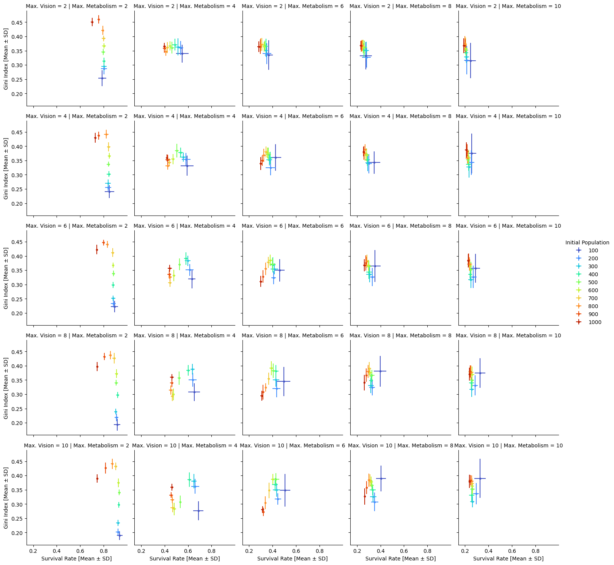

Agent-Based Modelling Assessment 1
Aim
This report aims to investigate the impact of various factors on the wealth distribution and the survival rate of turtles in the sugarscape model. In this report, the following 2 models from the NetLogo Models Library are investigated and compared.
- Sugarscape 2 Constant Growback model (Li and Wilensky, 2009a)
- Sugarscape 3 Wealth Distribution model (Li and Wilensky, 2009b)
The differences between the 2 models is that “Sugarscape 3” introduces reproduction and replacement, where turtles who have reached a certain age will die, and dead turtles are replaced by a new turtle placed in a random position. The Sugarscape 2 model can be interpreted as a representation of one generation of turtles, where the Sugarscape 3 model simulates multiple generations.
Research Question
How will the survival rate and the Gini Index change according to population growth? Is there a difference in the survival rate and the Gini Index when considering reproduction?
Hypothesis
The increase in population is expected to lower the survival rate and increase the Gini Index due to intesifying competition. The wealth distribution among turtles are expected to even out when considering reproduction. Turtles being ‘stuck’ to different areas with different amount of sugar may be the cause of inequality, and the reproduction process introduces more fluidness to the system.
Methods
We modified the Sugarscape Models in the NetLogo Models Library to change constants on the interface and the BehaviourSpace tool on NetLogo (Epstein and Axtell, 1996) to report the performance of each model. Further investigation on the wealth distribution was conducted to identify the mechanism behind the observed phenomenon.
Changing Variables and Iterations
Using the BehaviorSpace tool, we have simulated the performance using variables shown in Table 1 for both Sugarscape 2 and 3 models. All variations of the model were repeated 20 times. All other variables were unchanged from the original state.
| Variable | Explanation | Experimented Values |
|---|---|---|
initial_population |
Initial population of turtles. | 200, 400, 600, 800, 1000 |
max-metabolism |
Maximum metabolism of turtles. Metabolism for each turtle is assigned randomly between 1 and this variable. | 2, 4, 6, 8, 10 |
max-vision |
Maximum vision of turtles. Vision for each turtle is assigned randomly between 1 and this variable. | 2, 4, 6, 8, 10 |
Reporters of Performance
We have observed the reporters in Table 2 to measure the performance.
| Reporter | Explanation |
|---|---|
| Survival Rate of Turtles | Defined as the percentage of turtles alive at the natural state (Sugarscape 2), or the percentage of turtles who survived from starvation until their death by age (Sugarscape 3) |
| Gini Index | Cumulative proportion of wealth compared to the population, defined as the ratio of area under the Lorenz curve compared to perfect equality, as implemented in Li and Wilensky (2009b) |
| Population at natural age | Population of turtles at the natural state. The survival rate is the ratio of this value divided by the initial population. |
Considering the warm-up period, observations were made at the natural state defined in Table 3.
| Model | Definition of natural state |
|---|---|
| Sugarscape 2 | 100 ticks after the last death of turtle |
| Sugarscape 3 | Observation window of 2 to 5 maximum lifespan lengths (100 ticks) after start,for survival rates, or 5 maximum lifespan lengths for other measurements |
Comparison Between Models
The comparison between models are done on the basis of population at the natural state. The Sugarscape 2 model has less turtles than the initial state, while the Sugarscape 3 model has constant population.
Results
Survival Rate
The observed survival rates are shown in Figure 1.

A significant drop of survival rate is observed for maximum metabolism of 6 and above. Since the maximum amount of sugar supplied by a patch in Sugarscape is 4, all turtles with metabolism over 4 die before the natural state.
Gini Index
The Gini Index for each simulation is shown in Figure 2:
The Sugarscape 3 model results in a higher Gini Index overall and is less affected by the population of turtles. The Sugarscape 2 model has a lower Gini Index, and a distinctive N-shaped pattern is observed for population change. This pattern was most dinstinctive in conditions with high vision and moderate metabolism range, as shown in Figure 3.
max-vision = 10 and max-metabolism = 4.Discussion
Gini Index
Relationship with Population
An N-shaped pattern was observed for the relationship between the population and the Gini Index, as illustrated in Figure 3. To identify the reason behind this phenomenon, we analysed the behaviour of wealth distribution. Although the indeces may vary between iterations, the overall pattern is similar throughout the repititions. Snapshots and the wealth distribution at the natural state for models with different initial population are shown in Figure 4. The net wealth gained per tick is the amount of sugar for each turtle divided by the ticks passed, showing the average difference between the collected sugar and metabolism per tick.
max-vision = 10 and max-metabolism = 4). The range was divided into 10 bins to create the histogram, and was plotted according to the net wealth gained per tick.Distinct groups in the wealth distribution can be observed for all 4 simulations. The discrete distibution of metabolism and the steady sugar availability for each turtle may be causing this situation.
The first model with initial population of 100 has most of the turtles clustered in the high growth areas indicated by darker yellow,allowing for more sugar for the majority of the turtles.
The second model has 3 distinct groups, clustered around 0, 1 and 2. This can be explained as follows:
- The turtles have a steady income of 3, 2 or 1 depending on the area.
- Turtles no longer have access to a steady income of 4, observed in the first model.
The third model shows a similar pattern, with a slightly lower net wealth gained per tick value for the whole population and a significantly smaller population of the group clustered around 0. This implies each turtle had a slightly smaller income, and this had a fatal impact on the ‘poorest’ group, reducing population. The improvement in the Gini Index was a result of this starvation, not a result of equal distribution of sugar.
The final model sees a shift of the groups to the left, and the groups spreading out. The competition has made it difficult to gain a steady (integer) amount of income throughout the simulation, and lead to a decline in the average income earned every tick. The Gini Index has increased because of the relationship between the two groups; the same absolute difference now has a different ratio, making the poorer group having less overall share of the total wealth.
In conclusion, the segregation into distinct groups and starvation of poorest groups may be causing the varying Gini Index and the survival rate resulting in the ‘N-shaped’ pattern observed in the scatter plot.
Considering Reproduction
The introduction of reproduction in the Sugarscape 3 model has caused the Gini Index to increase, indicating higher inequality (Figure 2). This result contradicts our hypothesis, where we have predicted the ‘resetting’ evens out the distribution of wealth.

max-vision = 6, max-metabolism = 4The wealth distribution for the Sugarscape 3 model shows a negatively skewed distribution, shown in Figure 5. The constant supply of turtles in unsurvivable areas with low sugar supply contributes to keeping a steady amount of poor population, while this group cannot survive until the natural state in the Sugarscape 2 model. The existence of the poor group is the cause of a higher Gini Index.
Survival Rate
The survival rate for the 2 models have a similar value when the final population is similar. This result ensures our definition of survival rates are decent. The trend is showing a steep drop at low population, followed by a relatively flat segment where the survival rate stays unchanged in accordance to population change.
This can also be explained through the wealth distribution we have observed with Figure 4. The initial drop is explained by the difference between the second and third model, where the ‘poorest’ group can no longer survive, leading to a drop in the survival rate. The relatively flat area that follows is illustrated between the third and the fourth model, where the average income decreases but no significant population groups starve.

The ‘N-shape’ of this graph consists of two patterns observed:
- survival rate does not change significantly while the Gini Index increases
- the survival rate and the Gini Index both drop
The former may be caused by the ‘left-shift’ of the wealth distribution histogram observed between the third and fourth model in Figure 4, while the latter may be caused by the poorest group forced into starvation.
Conclusion
We have observed the impact of population and ability of turtles on the wealth distribution and the survival rate of the model. The survival rate and the Gini Index are both essential parameters when measuring the equality of wealth distribution. Our models have revealed that an improvement in the Gini Index may be a result of poor groups starving, thus excluded from calculation. Further development of the Sugarscape 3 model for different reproduction rules provides room for potential future research. By placing newborn turtles in locations in relationship to the parent, instead of a random distribution, may enable us to reflect the real-world parameters of parental influence and inheritance.
Word count: 1,500 words.
The code for this report is available on GitHub.